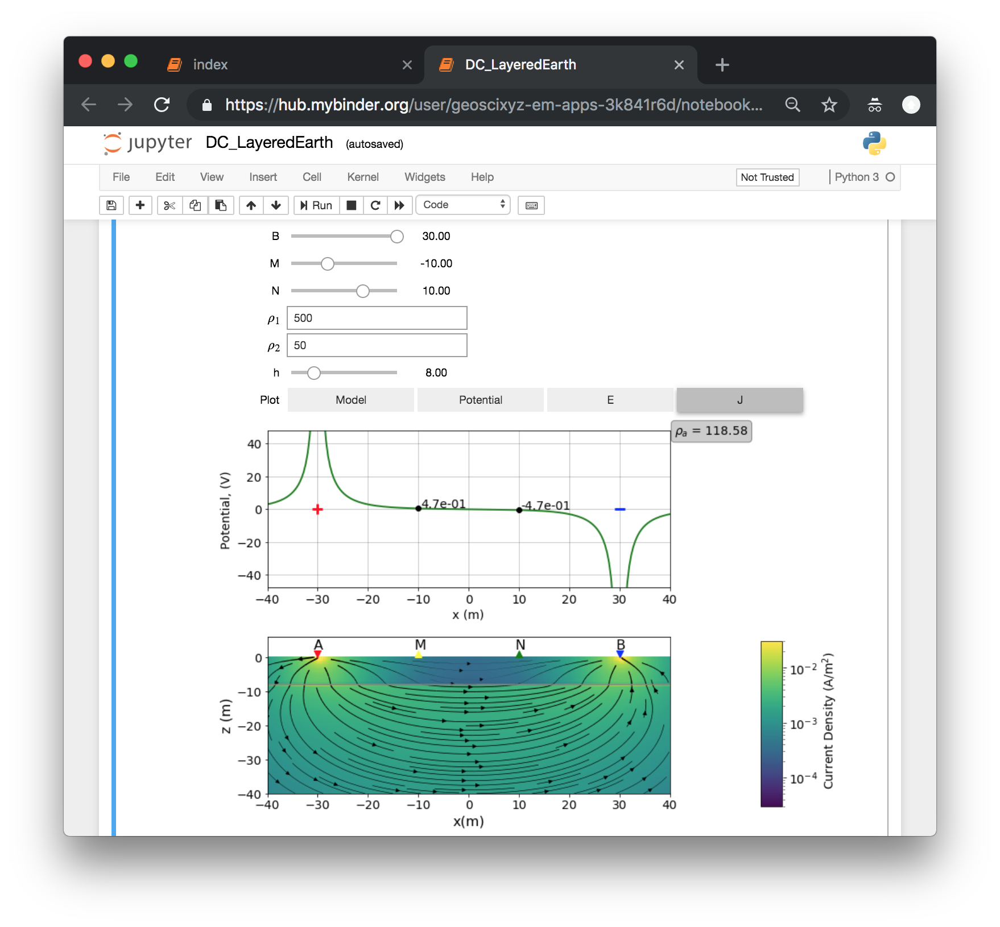
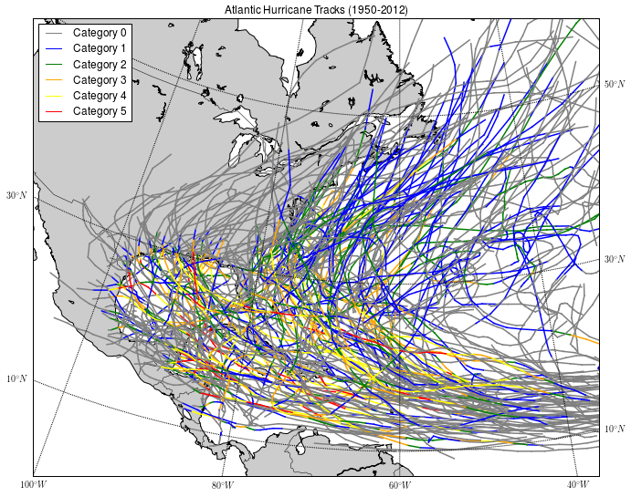
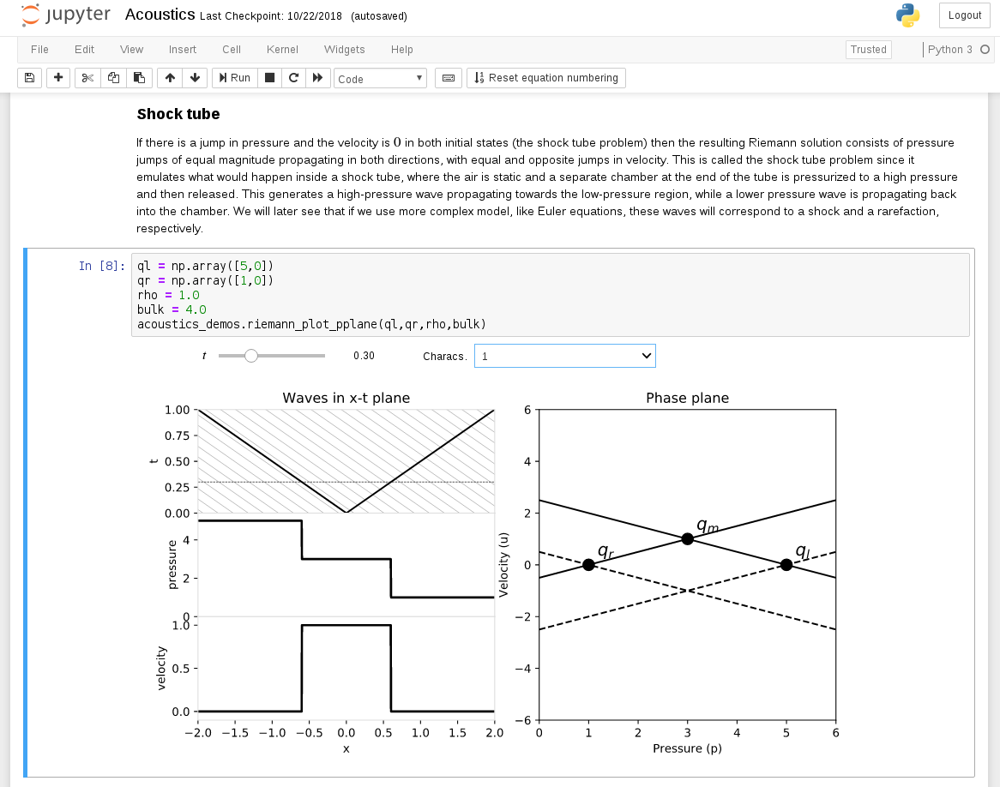

Usage case studies {#case-studies}¶
Contributors to this chapter: you may increase adoption by new users if you integrate information about some of the following into your case:
Demonstrate that you can increase students’ ability to:
Engage material & participate in class
Understand material and perform well
prep their for career
Enjoy learning this way
describe:
how it fits with how their students learn
how it connects to how they teach
the needed resources (support, hardware, etc.)
the necessary logistics (e.g., how much time will it take? Be honest: time is a consideration, and an important reason that people do not adopt new practices, but is not a reason that they stopped using one)
what Jupyter does in terms of promoting learning, instructor affordances
Jupyter notebooks in support of scaling for large enrollments¶
Supporting large enrollment courses at UC Berkeley¶
The University of California at Berkeley started a pilot course titled “Foundations in Data Science” (also known as Data-8) for about 100 incoming undergraduate students in Fall 2015. Data-8, the fastest growing course in Berkeley’s history, is entirely Jupyter-based, allowing the program to scale the course to 1,400 students in 2018. This scale is made possible by Jupyter’s shared computational environment. In particular, Jupyter allowed “browser-based computation, avoiding the need for students to install software, transfer files, or update libraries” (see The Course of the Future and the Technology Behind It [https://data.berkeley.edu/news/coursefuture]). Data-8 is powered by JupyterHub and all the course materials are published openly (http://data8.org).
Large-scale adoption: Jupyter across Canada¶
Recognizing the importance of data science, computational research, and educational resources, the Pacific Institute for the Mathematical Sciences (PIMS), in partnership with Compute Canada and Cybera, have launched JupyterHub platforms (under the project name Syzygy) to support researchers and educators across Canada. Syzygy (http://syzygy.ca) provides access to cloud-hosted Jupyter resources using existing institutional credentials and encourages the development of computational and data science skills. It is currently accessible at 16 institutions across the country (McMaster, Queen’s, SFU, UAlberta, UBC, UCalgary, ULethbridge, UNewBrunswick, UOttawa, URegina, USask, UToronto, UVic, UWashington (US), UWaterloo, Yorku) and has been used by over 11,000 people at those institutions.
Syzygy is extensively used for teaching, but is also being used for research activities. One notable example is a scientific software seminar at the University of British Columbia, where graduate students and post-doctoral researchers meet to share and learn data science techniques with their peers. Initiatives are also underway, as part of syzygy, to deepen its relevance into research by providing seamless access to larger and more varied types of resources (GPUs, parallel machines, different language kernels etc.).
Callysto (https://callysto.ca/) is a related project, also launched by PIMS and Cybera, to bring Jupyter to students in Canadian middle and high schools (grades 5-12). Callysto focuses on creating and curating open content (https://github.com/callysto). This content forms the basis of project workshops, where teachers can work through the materials interactively, before taking them back to their classrooms. The content links to a supporting JupyterHub installation (integrated with the authentication systems for the networks of school districts) allowing easy access to the materials and a Jupyter environment to learn and create in.
– Ian Allison
Quick switch: moving an existing course to Python and Jupyter (at the last minute)¶
For many years, our chemical engineering kinetics course had used software for differential equation and nonlinear simultaneous equation solving to simulate reactors and solve design problems. The software, recommended and described by the textbook, was installed in the college’s computer labs, but licenses for student-owned computers were expensive and it was only available for Windows. In Spring 2015, I was informed my class now had 52 students, but the largest computer lab had room for only 40. As the semester progressed and we neared the chapters that required numerical simulation, I rewrote the examples using Python and SciPy and created Jupyter notebooks, walking students through the steps involved in setting up and solving the problems. I found Lorena Barba’s open-source MOOC materials online, and adapted these for my “getting started” notebooks. I had students install Anaconda on their own computers, and got everyone up and running without any central infrastructure or support from the college’s IT staff. I found the Jupyter Notebook format of including “lecture note” style commentary along with short, unintimidating, snippets of code, to be extremely effective. A couple of years later I passed on the course to a new instructor, who took my course materials, taught himself some Python, and continued to use Jupyter notebooks for content delivery and assignments.
The first year was a bit rough around the edges as I introduced it quite late in the semester. Still, it is clear that the approach resonated with students. An alumnus from my 2016 course wrote, “I thought that your course was very successful, especially the use of Jupyter Notebook as a classroom and assignment tool. I still remember specific problems that we went over in class (e.g., the microfluidic reactor array with heterogeneous catalysis), and I feel that the use of Python to solve problems throughout the course greatly benefited my understanding of fundamental concepts. I went on to use Python [in the pharmaceutical industry], where I built tools for bioinformatics data analysis, mutation network profiling for protein engineering experiments, and RNA structure prediction from experimental data and molecular thermodynamics.”
– Richard West
The “CFD Python” story: guiding learners at their own pace¶
“CFD Python” is a collection of Jupyter notebooks based on a practical module that I began using in class in my Computational Fluid Dynamics (CFD) course at Boston University in 2009. The 5-week module develops worked examples that build on each other to incrementally guide the learner to create a program to solve the Navier-Stokes equations of fluid mechanics, in 12 steps. In 2013, I was invited to teach a mini-course in the Latin-American School in High-Performance Computing, in Argentina. The Jupyter notebooks platform allowed me to create a guided narrative to support learners with different background experience and knowledge. For that event, we wrote notebooks based on the CFD course module, to use as instructional scaffolding in the 2-full-days of minicourse. Twenty students worked through the notebooks as self-paced lessons, while I went from desk to desk asking and answering questions. About four of the students completed all the lessons in the 2 days, a bulk of them achieved up to about Step 8, and a few of them lagged behind in Steps 4 or 5 by the end of the course. For those who completed the full module, they had achieved in 2 days what my regular students in the classroom normally took 5 weeks to do. Seeing that was an eye-opening moment: both the power of worked examples in code, and the ability to allow learners to follow their own pace made a remarkable difference in these learners.
_REF — Barba, Lorena A., and Forsyth, Gilbert F. (2018). CFD Python: the 12 steps to Navier–Stokes equations. Journal of Open Source Education, 1(9), 21, https://doi.org/10.21105/jose.00021 _
Based on the experience developing the “CFD Python” learning module, we adopted this basic design pattern for creating lessons using computable content:
Break it down into small steps
Chunk small steps into bigger steps
Add narrative and connect
Link out to documentation
Interleave easy exercises
Spice with challenge questions/tasks
Publish openly online
– Lorena A. Barba
Analyzing music with music21¶
I became interested in learning more about Python in 2013 after reading a tutorial by Luciano Ramalho as he was writing Fluent Python. Since I tend to seek out projects that match my outside interests (music, art, and nature) I was looking for Python projects with music and came across Myke Cuthbert’s music21 project. Music21, an open source music theory and analysis library maintained by Professor Michael Cuthbert at MIT, provides a set of tools to answer questions about music quickly and simply. Users can create, analyze, and share music with just a few lines of code. Myke’s use of the notebook hooked me. Unlike many things that I had worked on before, the notebooks made it easy to get started and to write small code snippets that did real work! The more I used the notebooks and showed them to people that I taught at Fab Lab San Diego, the more that I saw the power of the notebook to engage a user and empower them to explore and learn.
Music, a universal language, appeals to learners of all origins, ages, education levels, and interests. As a subject that casts a wide appeal, music offers the opportunity to engage and delight learners. It’s an accessible subject that has a low barrier to entry for learners from disciplines beyond computer science and engineering.
– Carol Willing
Education benefits
lessons notebooks can be tailored to age appropriate content within music
multisensory
ability in K12 to align with the standards
possibilities for bringing in multi-subject learning
writing
history
math
science
accessibility through audio and braille
Misc quotes (perhaps pick a couple?):
“I think of music21 as being composed of two parts. The first is infrastructure, routines for reading, writing, and manipulating musical scores, while the second consists of a higher-level analytical toolkit—generating a Roman numeral from a chord and key, putting chords into normal form, checking for parallel fifths, identifying scales containing a given pitch or chord, and so on.” —Bruce Tymoczko, Professor of Music, Princeton
Inclusive
“It’s not exclusive, but inclusive, which is the whole spirit of jazz.” — Herbie Hancock
Education
“So, you can’t stay in one place, no matter how comfortable that place is. It’s all about growing.”—Mavis Staples
Universal
“Music in the soul can be heard by the universe.”—Lao Tzu
Communication
Music is the greatest communication in the world. Even if people don’t understand the language that you’re singing in, they still know good music when they hear it.”—Lou Rawls
“In the beginner’s mind there are many possibilities. In the expert’s mind there are few.” –Shunryu Suzuki
Interactivity in computer science (high school and middle school)¶
Who
High school and middle school students at Cal Poly SLO’s EPIC program completed a two hour workshop on Interactivity in Computer Science. The workshop participants included dual language learners (English as a Second Language) and students who have had limited access to computers prior to the workshop.
Why
Providing early access to at-risk groups who may not see themselves as capable of learning to code or use computation
Illustrate that there are many skills beyond math and science that are needed to create software applications
What
Two hour workshop that maximizes “hands on” exploration with the goal of building an ongoing interest in computer science
short lectures
interactive discussion - LISTEN
hands on - DO/APPLY This section is self-paced to engage different learning styles and prior knowledge
recap - DISCUSS
8 or so projects with achievements outlined
modern curriculum including p5.js, jupyter, binder, deep learning and machine learning with TensorFlow and Magenta (art and music)
Goal is to empower students to understand that they CAN use CS to solve real world problems
Instructor Approach
Start with high quality engaging content
Self contained notebooks
Use widgets to add additional interactivity
Interactive geophysics with Jupyter¶
The GeoSci.xyz project (https://geosci.xyz) is an effort to develop a community of scientists and educators around learning resources and software for the geosciences. The project includes multiple open-source textbooks, each which have associated Jupyter notebook “apps” that serve as interactive simulation engines for exploring concepts in geophysics. We have used these resources in an undergraduate course on applied geophysics at the University of British Columbia; this course is primarily taken by by geologists and engineers (non-geophysics majors). In 2017, we delivered a 2 day short course for professionals, graduate students, and researchers in 26 different countries around the world (https://disc2017.geosci.xyz). In both of these courses, the goal is to provide learners with an overview of the various geophysical methods (e.g. magnetics, gravity, seismic, electromagnetics) and concepts governing the physics; we do not dive into details of the math nor do we expect students to program or write any lines of code. The role of Jupyter notebooks in these courses is to serve as a tool for visualizing and exploring the physics.
During a lecture, the notebooks as a presentation medium lend to a dynamic presentation style, where we as instructors can select model parameters based on student input. Concepts are reinforced as students then use these same notebooks in labs and assignments. We have found that the notebook apps are most effective when students are first asked to critically think about what they expect to see and then visualize the result. If the resultant image matches their expectation, then they understand the concept, and if not, it is an opportunity to learn and further explore.
– Lindsey Heagy

Investigating hurricanes¶
Who
Middle school and high school students visiting Columbia’s School of Engineering and Applied Sciences on a field trip
Why
Students often come through looking to tour labs and experience some of the research that is being done at the school. Unfortunately certain fields, in this case computational mathematics and hurricane research, do not lend themselves to these types of events.
What
Instead of a lab or lecture a computer lab was reserved for an hour and a Jupyter notebook used to walk students through some basic visualizations and data analysis encouraging students to change the code displayed to answer questions such as “Where did Hurricane Sandy go?” and “What storms occurred during 1981?”. This includes a number of visualizations of hurricane tracks, coloring by strength of storms, and an analysis of average number of storms per year. Notebook is available at https://github.com/applied-math/demos.
– Kyle T. Mandli

Riemann Problems and Jupyter Solutions¶
We first envisioned this project as a teaching aid to interactively illustrate difficult concepts for a graduate course in numerical methods for conservation laws. These are physical laws in the form of first-order hyperbolic partial differential equations that arise in wave propagation applications such as fluid dynamics, traffic flow, water waves (like tsunamis), and electromagnetic waves among others. The Riemann problem corresponds to a conservation law with a piecewise constant initial condition such that the problem is relatively simple to solve, while still capturing the characteristic dynamics of the conservation law. Due to its discrete nature, its simplicity and its capability to encode the dynamics, the Riemann problem is the key ingredient in modern numerical methods for conservation laws.
The project naturally evolved into Jupyter notebooks with the idea of compiling an interactive book. Each chapter aims to solve the Riemann problem for a specific application such as acoustics, shallow-water equations, and Euler equations. We further wanted to use our book to encourage the reading and publication of interactive notebooks. Therefore, we decided that our book should also have a printed and an HTML version in addition to notebooks available for downloading, to attract more readers and to encourage more authors and publishers to explore this interactive platform.
As one would expect, several new problems arose regarding how to make a book that is somewhat compatible across all the different platforms in which we wanted to present the book, particularly since the notebooks make heavy use of interactive widgets and animations. With the help of our publisher (SIAM) and several developers working on Jupyter-based tools for publishing interactive books, we are close to finalizing the project. We are happy to say that this project promoted the development of some of these tools and that is encouraging our publisher to delve more into interactive book publication.
This book should be completed in the next few months, and the current state can be viewed at http://www.clawpack.org/riemann_book/index.html.
– David I. Ketcheson, Randall J. LeVeque, and Mauricio J. del Razo
